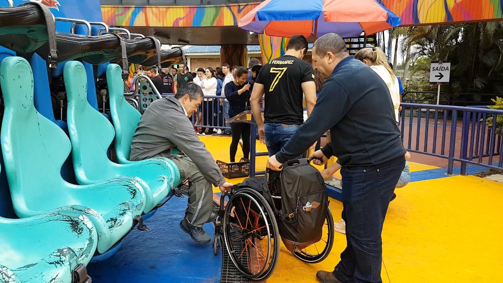
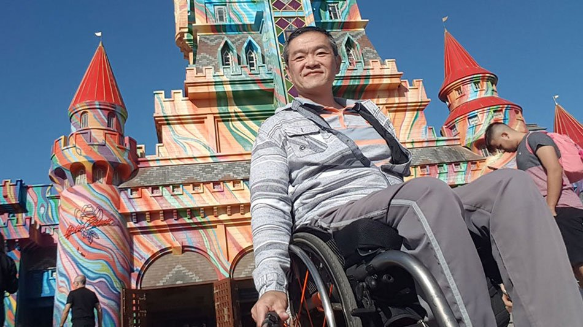
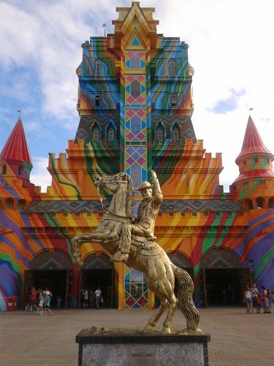
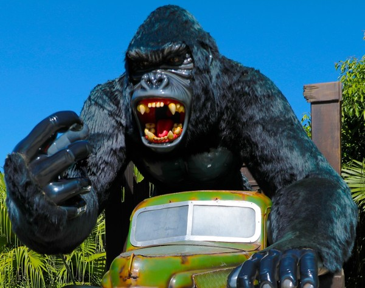
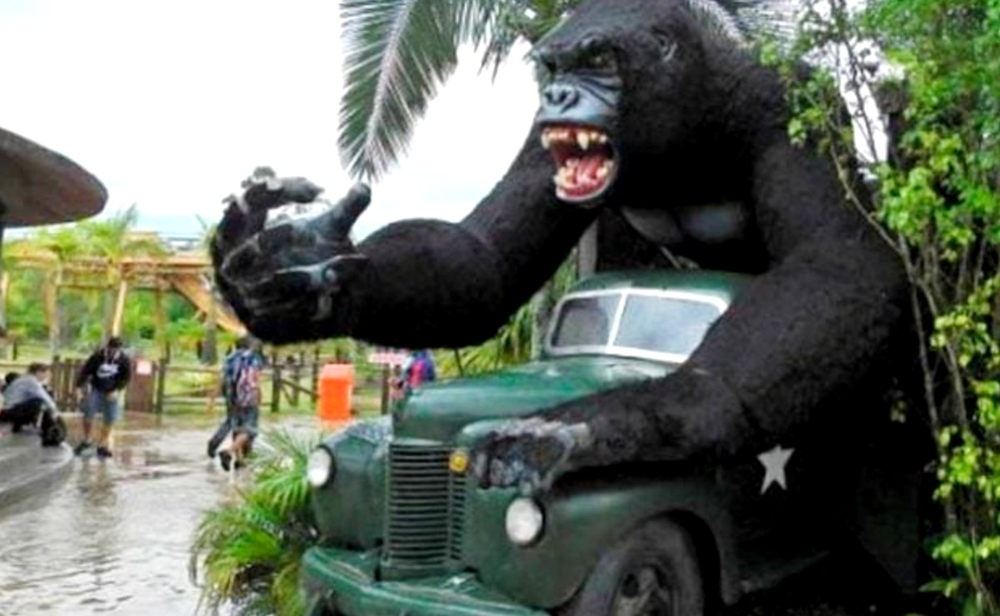

Disney World
Na primeira posição se encontra o parque Disney World, fundados no ano de 1965, esses parques ficam em primeiro lugar quando se fala dos parques mais famosos.
Alguma vez você já se perguntou quais são os parques de diversões mais conhecidos do mundo?
Na primeira posição se encontra o parque Disney World, fundados no ano de 1965, esses parques ficam em primeiro lugar quando se fala dos parques mais famosos.
Já o segundo colocado é o parque da Ferrari World, ele foi inaugurado no ano de 2010, fica localizado nos Emirados Árabes. Segundo os donos do parque, esse é o maior parque temático coberto do mundo inteiro.
E por ultimo, temos o Beto Carrero World, inaugurado no ano de 1991, tendo uma área de 14 quilômetros quadrados e localizado na cidade de Penha, em Santa Catarina.
Em um parque de diversões é essencial em que tenha acessibilidade para deficientes e para todo seu publico.
Todo parque é pavimentado e as principais avenidas são asfaltadas. O cadeirante e um acompanhante podem acessar os brinquedos pela saída, não precisando pegar filas, além de solicitar orientações a um monitor quanto às restrições no brinquedo.
Algumas atrações possuem restrição em relação a cirurgias recentes, pinos, platinas, próteses e gessos, em que o visitante deve se informar com o monitor de cada equipamento. A montanha russa Tigor Mountain e a atração opcional Excalibur possuem elevador de acessibilidade, com capacidade para suportar 250 kg.
Caso o cadeirante não possa trazer sua própria cadeira, o Beto Carrero World fornece cadeira de rodas conforme disponibilidade (quantidade limitada) para retirar em no Guarda-Volumes, este deve ser solicitado a um monitor ou segurança ao acessar o Castelo das Nações.
Em um parque, uma das coisas mais importantes é a identidade visual, para que tenha uma "impressão digital", já que apenas esse parque teria.
O mais marcante do parque em si é o personagem Beto Carrero, esse personagem foi inaugurado no dia 28/12/199, Beto Carrero foi criado por João Batista. Sua história em si é de um menino simples e sonhador, seu sonho era ser o Zorro brasileiro e trabalhar num parque de diversões.
Além do personagem/empresa do parque, outro fator marcante é a parceira que o parque possui com a DreamWorks, envolvendo áreas temáticas do Filme Madagascar e Sherek.
Uma das coisas que um parque tem que tomar muito cuidado, é a questão dos acidentes, já que, se ouver vários acidentes o parque perde seu público, então ele tem que buscar soluções para evitar esses tipos de acidentes.
Um menino de 6 anos caiu de uma atração no dia 19 de junho. De acordo com a administração do local, ele estava em uma estátua de um gorila, quando ocorreu a queda. Durante o passeio, o menino estava acompanhado da mãe, do pai e da madrinha. Segundo Ana Claudia Lima, amiga dos pais do garoto, o valor do passeio que foi presente de aniversário para o garoto, foi dividido entre pessoas próximas.

Segundo o advogado da família, o garoto pediu aos pais para tirar uma foto na atração chamada O Gorila
. O menino subiu no local indicado para ter acesso a mão do "Gorila" tirar a foto desejada.
De acordo com o defensor, um rugido alto foi emitido pela estátua de gorila enquanto o menino se posicionava para tirar uma foto: Ele se assustou, caiu e bateu a cabeça
.
A atração não tem restrição de idade, pois não funciona como brinquedo, sendo uma estátua para que os visitantes tirarem fotos, conforme informação divulgada pela administração do parque.
De acordo com o advogado da família, informações iniciais afirmam que, a criança teria caído de uma altura a cerca dois metros. Questionado sobre esse fato, o Beto Carrero World não confirmou a altura.
A parceria entre o Beto Carrero e a PWI está proporcionando a utilização de soluções focadas ao negócio, com apoio de profissionais com grande experiência.
Atualmente utilizão as soluções de Pré-venda e retaguarda, frente de caixa e controle de acesso. Além do uso padrão desses sistemas, alguns módulos customizados foram implantados com a finalidade de atender as necessidade e demanda.
Destacando os módulos de controle de acesso por biometria, acesso a dados através de dispositivos móveis e a integração entre a loja virtual e o controle de acesso.